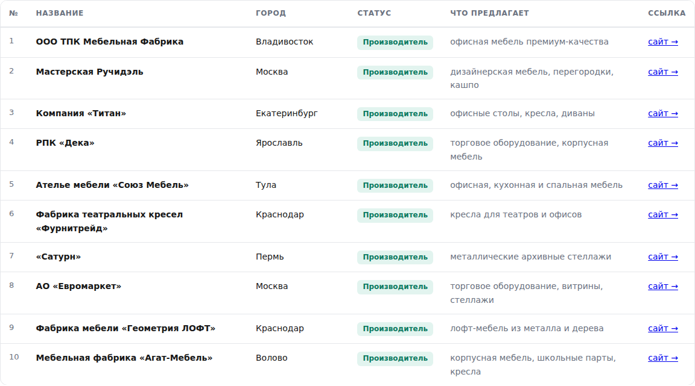

Что получишь
Широкую карту рынка (десятки производителей и поставщиков в одной таблице), глубокий разбор прямых конкурентов (цены по конкретным товарам, карта позиционирования, сильные/слабые стороны) и отдельный глубокий разбор поставщиков — где именно можно получить операционное преимущество (цена, условия опта, логистика), а не только красивое позиционирование на бумаге. Такое исследование не делается за один запрос в окне чата — агент должен реально сходить на десятки страниц и свести всё в структуру.
Кому и зачем
До сих пор агент работал только с твоими файлами. В этом модуле он читает чужие сайты — причём не 3–4, а столько, сколько нужно для настоящей картины рынка. Разница с «погуглить самому» — не только глубина, но и масштаб: пройти по 50+ сайтам одинаковым набором вопросов вручную нереально, а агенту это занимает то же время, что и по пяти.
Подготовка
Список конкурентов и/или поставщиков (названия + сайты) — см. «Что подготовить к курсу», п. 5. Нет списка — агент соберёт его сам: по отраслевым B2B-каталогам (широкий проход) и веб-поиском по своему городу (прямые конкуренты).
Шаги
Шаг 0. Широкая карта рынка: десятки, а не четыре (20 мин)
Прежде чем нырять глубоко в нескольких, попроси агента построить обзор всего поля:
Найди в открытых источниках (отраслевые B2B-каталоги, веб-поиск) производителей и поставщиков офисной мебели — как можно больше, минимум 40–50. Для каждого: название, город, статус (производитель/поставщик), что предлагает, ссылка на источник. Собери в одну таблицу.
На нашем прогоне агент собрал 56 позиций: 48 — из отраслевого каталога производителей по всей России, 8 — прямым поиском розничных продавцов в Казани.

Это обзорный список, не глубокий разбор — у каждой строки рабочая ссылка на источник, но агент не ходил по каждой глубже главной/каталожной страницы. Такую таблицу невозможно набрать вручную за разумное время, а собрать её одним запросом в окне чата — нельзя: нужно реально открыть десятки страниц.
Учебный момент. Широкий список — это не готовый анализ, а сырьё для решения «с кем разбираться подробно». Не путай 56 строк в таблице с 56 конкурентами: из всей карты реальных соперников за твоего покупателя в твоём городе может быть 3–5, остальное — потенциальные поставщики или игроки других рынков.
Шаг 1. Быстрый проход по избранным — и его ловушка (15 мин)
Начни с общей разведки по каждому:
Изучи сайт [конкурент]: что продают, в каком ценовом сегменте, на что делают упор в подаче, какие услуги обещают. Каждый факт — со ссылкой на страницу.
Это даёт общую картину за 15 минут — но не более того. Главная страница — маркетинг: она может сказать «цены по запросу», хотя в каталоге они открыты, или показать премиум-витрину, из-за которой весь бренд покажется дороже, чем есть. Разведку по одной странице нельзя считать законченной.
Шаг 2. Цены «в лоб»: сравни конкретный товар (20 мин)
Выбери 1–2 товара, которые есть у всех, и попроси агента зайти в конкретный раздел каталога:
Зайди в каталог каждого конкурента в раздел «столы для персонала» (или аналогичный) и выпиши 5–8 моделей с ценами. То же самое для «офисные кресла». Мне нужен реальный диапазон цен, а не общее впечатление от главной страницы.
Результат на учебной нише (офисная мебель, Казань — четыре реальных игрока: ДЭФО, Феликс, Евроофис, Азамат-Мебель):

Полный разбор: таблица позиционирования → реальные цены по каталогу → карта позиционирования → сильные/слабые стороны каждого → выводы.
Открыть отчёт целиком: rynok-za-chas.html
На нашем прогоне глубокий проход перевернул два вывода из шага 1: конкурент, который на главной странице выглядел так, будто прячет цены, — в каталоге показал их открыто. А тот, кто по беглому впечатлению казался премиальным по креслам, в реальном разделе оказался вдвое дешевле остальных.
Учебный момент. Ошибка нашлась не потому, что агент «плохо считал», а потому что первый проход опирался на маркетинговый текст, а не на данные каталога. Правило модуля: для сравнения цен — только конкретные товарные страницы, не витрина.
Шаг 3. Карта позиционирования (15 мин)
Когда данные по ценам и обещаниям собраны, попроси визуализировать расстановку сил:
Собери карту позиционирования: по одной оси — уровень цен (от входа до потолка ассортимента), по другой — насыщенность сервисных обещаний. Расставь всех конкурентов и нас, и отметь, есть ли пустая зона.
Это не строгие данные, а качественная оценка — но именно она показывает, где рынок уже «занят» насмерть, а где просвет. На учебной нише пустой оказалась середина: умеренная цена плюс понятное (но не «федеральное») обещание.
Шаг 4. Сильные и слабые стороны — и что это значит для нас (15 мин)
Для каждого конкурента сформулируй: одно сильное место, одно слабое место, и что это значит конкретно для нас — в чём с ним не нужно тягаться, а в чём есть шанс.
Требуй именно «что это значит для нас» — иначе получится нейтральный список фактов без выводов.
Шаг 4.5. Разбор поставщиков: где взять реальное преимущество (25 мин)
До сих пор мы отвечали на вопрос «с кем мы конкурируем за покупателя». Есть другой вопрос — «у кого нам закупаться, чтобы получить преимущество, которого нет у конкурентов». Возьми из широкой карты не 3–4, а больше — 7–8 производителей, и по каждому зайди не в общую карточку, а в конкретный раздел с оптовыми условиями:
Для каждого из этих семи производителей найди: специализация, ценовой сегмент, условия для оптовых покупателей (минимальная партия, схема оплаты), что отличает от других. Сведи в таблицу и добавь колонку «расстояние до нашего города» — это реальный фактор логистики.
На нашем прогоне сравнение семи производителей (не четырёх!) по цене, условиям опта и удалённости дало конкретную находку: ближайший производитель (130 км) продаёт на 30% дешевле «без посредников», а другой предлагает дропшиппинг от 1 штуки — можно расширять ассортимент без риска зависшего склада. Вместе это дало операционный (не только рекламный) способ занять пустую зону на карте позиционирования: закупка дешевле и ближе + гибкое расширение модельного ряда.
Учебный момент. Тот же урок про доверие к источнику здесь повторился ещё раз: один из производителей значился в отраслевом каталоге как «производитель», а по факту оказался перекупщиком продукции чужой фабрики за рубежом. Каталог — это стартовая точка, а не готовый факт.
Шаг 5. Спрос через Вордстат (10 мин)
Агент прочитал, что конкуренты предлагают. Вордстат покажет, что люди ищут. Зайди в wordstat.yandex.ru (нужен вход в Яндекс), сними частотности по 5–7 запросам ниши и отдай агенту список: «вот частотности — какую из двух позиций конкурентов это подтверждает?»
Шаг 6. Финальный отчёт и разбор (10 мин)
Собери всё в один HTML-отчёт (широкая карта → таблица позиционирования → цены в лоб → карта → сильные/слабые стороны → разбор поставщиков → спрос → выводы с конкретными следствиями) и пройдись глазами по цифрам ещё раз, прежде чем считать готовым.
Чек-лист
- Широкая карта рынка — минимум 40–50 строк, у каждой есть ссылка-источник
- Отдельно понятно, кто из широкого списка — реальный конкурент, а кто — потенциальный поставщик
- Сравнение цен по избранным — по конкретным товарным страницам, не по главной
- Есть карта позиционирования, а не только таблица
- По каждому конкуренту из глубокого разбора — сильное, слабое и «что для нас»
- Разбор поставщиков (7–8, не 3–4) с реальными условиями опта и расстоянием до города
- Есть синтез: конкретное операционное преимущество, которое можно построить на закупке, а не только на позиционировании
- Хотя бы одну цифру я перепроверил по ссылке руками
- Все выводы конкретные: из каждого следует действие
Типичные ошибки
| Симптом | Причина | Решение |
|---|---|---|
| Широкий список смешан с глубоким разбором | Не разделили «кто есть на рынке» и «с кем мы реально конкурируем» | 56 строк в таблице — не 56 конкурентов; выбери 3–5 для глубокого разбора осознанно |
| Цены в отчёте не сходятся с сайтом | Взяты с главной страницы или устаревшей акции | Сравнивай по конкретным разделам каталога, не по витрине |
| Карта позиционирования — просто красивая картинка без выводов | Не спросил, где пустая зона | Явно попроси: «отметь пустую зону» |
| Сильные/слабые стороны — общие фразы («хороший сервис») | Запрос без «что это значит для нас» | Требуй конкретное следствие в каждом пункте |
| Разбор поставщиков ограничен 3-4 позициями | Взяли те же карточки, что и для конкурентов | Для поставщиков смотри именно на 7-8+ — сравнение содержательнее на большей выборке |
| Агент «зашёл» туда, куда не надо | Просьба достать закрытые цены/каталоги | Читаем только открытые страницы. Не обходим пароли, не притворяемся покупателем |
Домашнее задание
Повтори на своей реальной нише: широкую карту (40–50 игроков), глубокий разбор 3–5 настоящих конкурентов (цены «в лоб», карта позиционирования) и отдельно — разбор 7–8 поставщиков/производителей с условиями опта и логистикой. Сформулируй одним предложением: за счёт чего конкретно (не «хороший сервис», а операционно) твоё предложение может стать лучше, чем у текущих конкурентов. Покажи отчёт человеку, который знает твой рынок, — и запиши, с чем он не согласился.
Заметки из практики
Первый (быстрый) проход по четырём избранным конкурентам дал ошибку сразу в двух карточках из четырёх — и обе нашлись только при переходе от главной страницы к конкретному разделу каталога. Одна ошибка выставляла конкурента дороже, чем он есть (кресла оказались вдвое дешевле реальной цены), другая — скрывала открытые цены за маркетинговым «цены по запросу» с главной. Мораль: беглая разведка — это черновик, а не отчёт. А широкая карта на 56 строк — ещё один урок сам по себе: собрать её вручную нереально, но и спутать «есть в списке» с «наш прямой конкурент» — легко, если не разделить эти два вопроса явно.